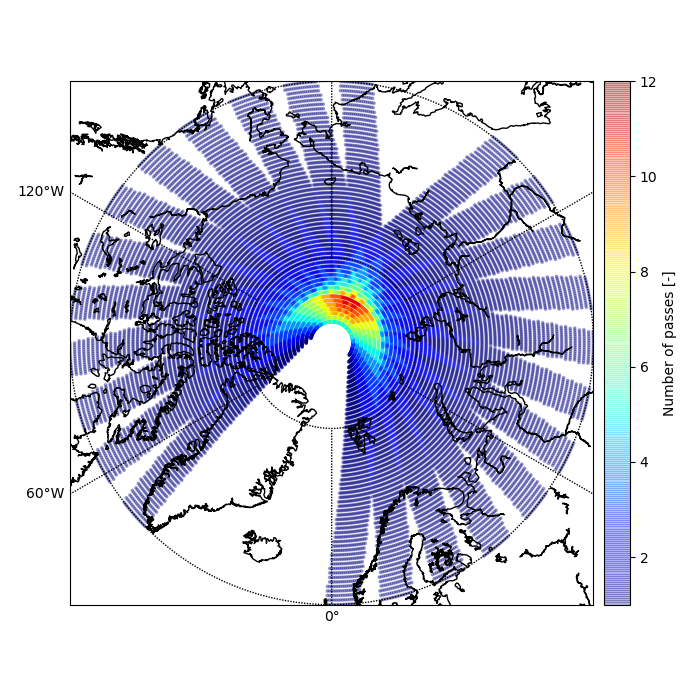
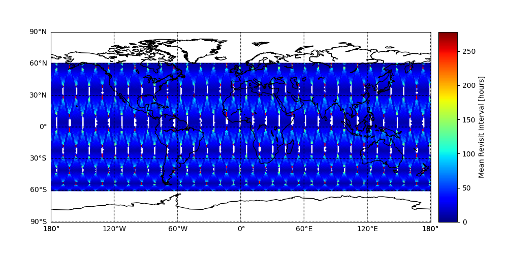
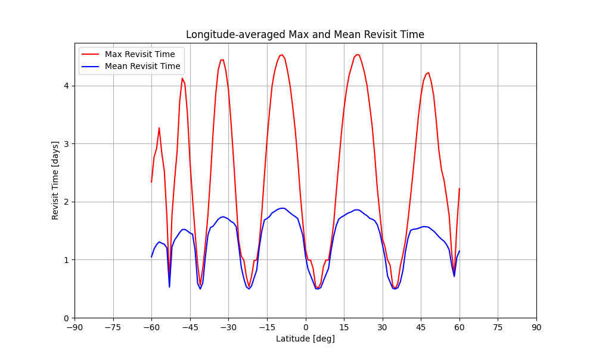

S1-NG
SatSVS simulation report, generated 2026-07-15 16:03
| Simulation | start MJD: 55324.0, stop MJD: 55336.0, number of time steps: 120.0 |
Scenario configuration
Simulation
| StartDate | 2010-05-08 00:00:00 |
| StopDate | 2010-05-20 00:00:00 |
| TimeStep | 120 |
| IncludeStation2SpaceLinks | False |
| IncludeUser2SpaceLinks | False |
| IncludeSpace2SpaceLinks | False |
| OrbitsFromPreviousRun | False |
| OrbitPropagator | Keplerian |
Space segment: S1-NG
| NumOfPlanes | 1 |
| NumOfSatellites | 2 |
| ConstellationID | 1 |
| ConstellationName | S1-NG |
| ReceiverConstellation | 1111 |
| ObsSwathStart | 325000.0 |
| ObsSwathStop | 575000.0 |
| SatelliteID | Plane | EpochMJD | SemiMajorAxis | Eccentricity | Inclination | RAAN | ArgOfPerigee | MeanAnomaly |
| 1 | 1 | 54465.0 | 7081289 | 0.00 | 98.157 | 188.934 | 0.00 | 0 |
| 2 | 1 | 54465.0 | 7081289 | 0.00 | 98.157 | 188.934 | 0.00 | 180 |
Ground segment
| Type | ConstellationID | GroundStationID | GroundStationName | Latitude | Longitude | Height | ReceiverConstellation | ElevationMask |
| RIMS | 1 | 1 | ALB | 57.10 | 9.90 | 0 | 1 | 5 |
User segment
| Type | LatMin | LatMax | LonMin | LonMax | LatStep | LonStep | Height | ReceiverConstellation | ElevationMask |
| Grid | -60 | 60 | -180 | 180 | 1 | 1 | 0.0 | 1111 | 5.0 |
Analyses
- obs_swath_push_broom — Revisit: True, Statistic: Mean
obs_swath_push_broom




